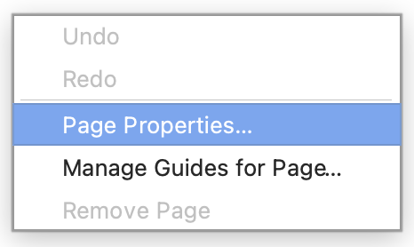
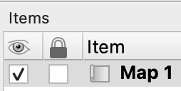

2 Composing maps in QGIS
Date of practical: 9th October 2025
Communication of geographical data and concepts through maps is a fundamental skill for spatial scientists. Creating maps requires both the ability to make them complete, correct and functional, and the flair to make them interesting and attractive. This exercise introduces the QGIS Print Layout window, and the final product represents your “Map 1”. assignment.
To create functionally complete maps in QGIS for print or digital output. You will learn how to create a 1:1,000,000 scale map of Wales illustrating mean wind speed and county boundaries.
2.1 Creating a print layout
Launch QGIS and create a new project
Import the
British_Isles_land_polygons.gpkg,Wales_border.gpkg, andWales_Principal_Areas.gpkglayers (the latter two are in theUK_Boundariesfolder)Label the Principal Areas of Wales in Welsh or English
Click
Project>New Print Layout...(and find the shortcuts to this window)Give the print layout an appropriate title
You can create more than one print layout. Use Project > Layout Manager... to easily access and organise layouts associated with your particular QGIS project.
Arrange the Map Canvas and Print Layout windows so you can see both at once. Subsequent instructions refer to the Print Layout window unless otherwise stated
-
Change the page orientation to A4 portrait:
- Right‑click on the blank print layout
- Click
Page Properties...

- Change
SizetoA4 - Change
OrientationtoPortrait
2.2 Adding and adjusting a map item
Click
Add Item>Add Map(look for the shortcut)Draw a map onto the print layout.
Map 1should now appear under theItemtab

Adjust the map using the squares around the edges
Select
Map 1Set
Scaleto1000000(i.e. 1:1,000,000)Use the
Move item content() andSelect/Move item() tools, and adjust theScalevalue, to compose the map so that all of Wales is visibleExperiment with making fine adjustments to the scale by holding down the
Ctrlkey and scrolling the mouse wheelOnce you’re satisfied with the scaling, framing, and position, freeze the view in place by checking the box under the lock icon () for
Map 1in theItemspanel-
In the Map Canvas window, adjust layer styles:
- Choose colours, border widths, and fonts that emphasise Wales and the difference between the outline of Wales (physical coast) and Principal Areas boundaries (non‑physical political construct)
-
To force the Print Layout to reflect changes, select either:
- The
Refreshicon () in the Print Layout window - The
Update Map Previewicon () underItem Propertiesin the Map Canvas window
- The
Ensure
Map 1is still selectedClick on the
Item Propertiestab and add aFrameModify the frame’s background colour appropriate for representing the ocean
You can modify the Layout and Item Properties of any item selected in the Item window. Note how the options under Layout and Item Properties tab update depending on what item you’ve selected. Remember that: (i) Order matters - the order in which map items are listed is how they are also stacked on top of one another in the print layout, and (ii) some layer properties (e.g. layer order, style, labeling) are controlled in the Map Canvas.
2.3 Adding a scale bar, north arrow, and grid
-
Add a scale bar:
- Click
Add Item>Add Scale Bar - Click on the map to place it (you can move it later)
- Select the scale bar under
Items - Click the
Item Propertiestab - Adjust the scale bar’s properties, notably
Style,Scalebar units,Segments,Frame, andBackground
- Click
-
Add a north arrow:
- Click
Add Item>Add North Arrow - Click on the map to place it (you can move it later)
- Select the north arrow under
Items - Click the
Item Propertiestab - Under
SVG Images, searcharrowand choose a suitable north arrow - Adjust the north arrow’s properties, notably
Fill colorandStroke color
- Click
-
Add a grid (aka graticule):
- Select
Map 1underItems - Click the
Item Propertiestab - Expand
Grids - Click
Add a new grid() - Click
Grid 1>Modify Grid... - Set
CRStoEPSG:4326 - WGS 84 - Set
XandYintervals to1degrees - Check
Draw Coordinates - Adjust the grid’s properties, notably
Grid type,Frame, andDraw Coordinates. Can you adjust the labels for readability, soften the gridlines, and reduce unnecessary trailing zeros?
- Select
You may find that some of the map items - notably the coordinates - are now beyond the edge of the page. These will be lost when the map is exported. In these cases, you will need to adjust the map size periodically as you experiment with how to best arrange map items and the caption (see Section 2.2). Check how using guides can aid you in aligning map items perfectly on the page.
2.4 Adding labels, and a legend
-
Add a map title label:
- Click
Add Item>Add Label - Click on the map to place it (you can move it later)
- Select the label under
Items - Click the
Item Propertiestab - Adjust the label’s properties, notably
Main Properties,Font,Rotation,Frame, andBackground
- Click
Add a short caption label. See FAQ for how to have both bold and normal text in the caption at once
-
Add a legend:
- Click
Add Item>Add Legend - Click on the map to place it (you can move it later)
- Select the legend under
Items - Click the
Item Propertiestab - Uncheck
Auto updateto enable modifications to the legend - Experiment with the legend toolbar icons () to improve the legend
- Adjust the legend’s properties, notably
Arrangement,Fonts and Text Formatting,Columns,Symbol,Spacing,Frame, andBackground
- Click
2.5 Adding raster data
Add your first raster layer in QGIS. From the menu bar, click
Layer>Add Layer>Add Raster Layer...Click the
Browseicon ( ) and navigate to the folder where the data is stored, i.e.
) and navigate to the folder where the data is stored, i.e. GEG276Open the
Wales_mean_windspeedfolder and click on any of the.tifraster layersClick
Open>Add>CloseOpen the layer’s
Properties...Under
Render type, selectSingleband pseudocolorUnder
Color ramp, select an appropriate colour ramp for the data (or pick one you just really like!)Click
OKPlay around with Wales Principal Areas and the windspeed data - by adjusting the order of layers in the
Layerspanel, and by modifying theProperties...of each layer - so that both are visible at the same time. Hint: modifyingFillorTransparencyproperties may do nicely…
Avoid semi‑transparent symbology that breaks the link between map colours and legend colours.
In the Print Layout window, select
Map 1and clickUpdate Map Previewunder theItem PropertiestabIf the colour scale for the raster layer does not appear in the legend, add it
Experiment with improving the aesthetics of the updated legend
Select
Map 1from theItemspanelUnder
Item Properties, check theLock layersandLock styles for layersto prevent further changes to the map. Uncheck if you need to make edits
2.6 Adding an inset map
Add a second map (see Section 2.2) to provide an inset showing the British Isles (e.g. at a scale of 1:20,000,000).
-
Modify:
- Which layers should be displayed (by turning visibility on and off, or changing layer order)
- Their symbology (see Section 1.3);
Place emphasis on only a few, simply presented layers that are useful at this scale. Aim to be minimalist to avoid cluttering the map. Note that, because your map of Wales is locked, it’s not affected by changes in layer visibility or symbology being made for the inset. Herein lies the power of locking layers.
Select
Map 1from theItemspanelUnder
Item Properties, expand theOverviewstabClick
Add a new overview( )
)Click
Overview 1Set the
Map frameto your Wales mapAdjust the
Frame styleto draw a hollow rectangle with a thick line, to easily show the main map’s extentExperiment further, especially with
Fill color,Stroke color, andJoin style
Projects can get rapidly out of control when multiple layers are used to build a map. It’s important to remove redundant layers and label items appropriately. E.g. try renaming Map 1 to Main, and Map 2 to Inset. This will help when you need to revisit and adjust your maps.
2.7 Exporting your map
Ensure each map item has
Lock layerschecked. This helps ensure the chosen map scale (1:1,000,000) reflects real‑world distancesClick
Layout>Export as PDF...>Save, and save in a suitable location-
Set
PDF Export Optionsas follows for best results:- ☑ Always export a vectors
- Text export:
Always Export Text as Paths - Image compression:
Lossless - ☑ Disable tiled raster layer exports
- ☑ Simplify geometries to reduce output file size
Click
Save. Congratulations - you’ve created your first QGIS map assignment. Now make any revisions to be able to submit the best Map 1 that you can!
By the end of this exercise you should:
- Be familiar with the QGIS Map Layout and its relationship to the QGIS Project window.
- Know how to add and arrange essential map features and adjust their properties to make a map attractive.
- Know how to configure multiple map items, legends, grids, scales and labels in a map layout.
- Be able to export a map layout for inclusion in a document or presentation.